微服务基础知识
一、微服务篇
1.1.SpringCloud常见组件有哪些？
问题说明：这个题目主要考察对SpringCloud的组件基本了解
难易程度：简单
参考话术：
SpringCloud包含的组件很多，有很多功能是重复的。其中最常用组件包括：
•注册中心组件：Eureka、Nacos等
•负载均衡组件：Ribbon
•远程调用组件：OpenFeign
•网关组件：Zuul、Gateway
•服务保护组件：Hystrix、Sentinel
•服务配置管理组件：SpringCloudConfig、Nacos
1.2.Nacos的服务注册表结构是怎样的？
问题说明：考察对Nacos数据分级结构的了解，以及Nacos源码的掌握情况
难易程度：一般
参考话术：
Nacos采用了数据的分级存储模型，最外层是Namespace，用来隔离环境。然后是Group，用来对服务分组。接下来就是服务（Service）了，一个服务包含多个实例，但是可能处于不同机房，因此Service下有多个集群（Cluster），Cluster下是不同的实例（Instance）。
对应到Java代码中，Nacos采用了一个多层的Map来表示。结构为Map>，其中最外层Map的key就是namespaceId，值是一个Map。内层Map的key是group拼接serviceName，值是Service对象。Service对象内部又是一个Map，key是集群名称，值是Cluster对象。而Cluster对象内部维护了Instance的集合。
如图：
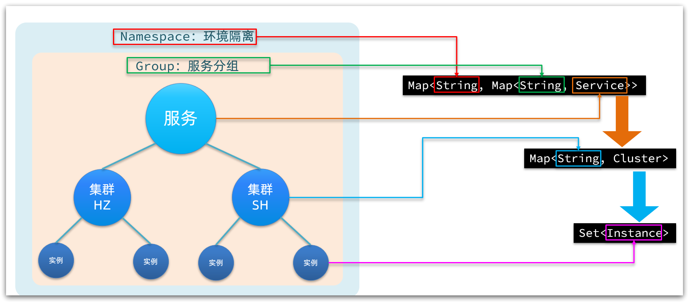
1.3.Nacos如何支撑阿里内部数十万服务注册压力？
问题说明：考察对Nacos源码的掌握情况
难易程度：难
参考话术：
Nacos内部接收到注册的请求时，不会立即写数据，而是将服务注册的任务放入一个阻塞队列就立即响应给客户端。然后利用线程池读取阻塞队列中的任务，异步来完成实例更新，从而提高并发写能力。
1.4.Nacos如何避免并发读写冲突问题？
问题说明：考察对Nacos源码的掌握情况
难易程度：难
参考话术：
Nacos在更新实例列表时，会采用CopyOnWrite技术，首先将旧的实例列表拷贝一份，然后更新拷贝的实例列表，再用更新后的实例列表来覆盖旧的实例列表。
这样在更新的过程中，就不会对读实例列表的请求产生影响，也不会出现脏读问题了。
1.5.Nacos与Eureka的区别有哪些？
问题说明：考察对Nacos、Eureka的底层实现的掌握情况
难易程度：难
参考话术：
Nacos与Eureka有相同点，也有不同之处，可以从以下几点来描述：
- 接口方式：Nacos与Eureka都对外暴露了Rest风格的API接口，用来实现服务注册、发现等功能
- 实例类型：Nacos的实例有永久和临时实例之分；而Eureka只支持临时实例
- 健康检测：Nacos对临时实例采用心跳模式检测，对永久实例采用主动请求来检测；Eureka只支持心跳模式
- 服务发现：Nacos支持定时拉取和订阅推送两种模式；Eureka只支持定时拉取模式
1.6.Sentinel的限流与Gateway的限流有什么差别？
问题说明：考察对限流算法的掌握情况
难易程度：难
参考话术：
限流算法常见的有三种实现：滑动时间窗口、令牌桶算法、漏桶算法。Gateway则采用了基于Redis实现的令牌桶算法。
而Sentinel内部却比较复杂：
- 默认限流模式是基于滑动时间窗口算法
- 排队等待的限流模式则基于漏桶算法
- 而热点参数限流则是基于令牌桶算法
1.7.Sentinel的线程隔离与Hystix的线程隔离有什么差别?
问题说明：考察对线程隔离方案的掌握情况
难易程度：一般
参考话术：
Hystix默认是基于线程池实现的线程隔离，每一个被隔离的业务都要创建一个独立的线程池，线程过多会带来额外的CPU开销，性能一般，但是隔离性更强。
Sentinel是基于信号量（计数器）实现的线程隔离，不用创建线程池，性能较好，但是隔离性一般。
二、MQ篇
2.1.你们为什么选择了RabbitMQ而不是其它的MQ？
如图：
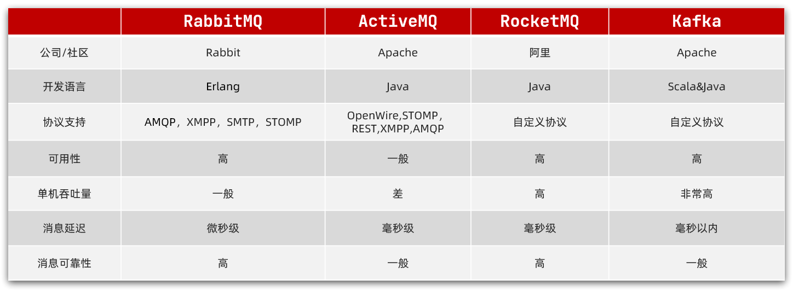
话术：
kafka是以吞吐量高而闻名，不过其数据稳定性一般，而且无法保证消息有序性。我们公司的日志收集也有使用，业务模块中则使用的RabbitMQ。
阿里巴巴的RocketMQ基于Kafka的原理，弥补了Kafka的缺点，继承了其高吞吐的优势，其客户端目前以Java为主。但是我们担心阿里巴巴开源产品的稳定性，所以就没有使用。
RabbitMQ基于面向并发的语言Erlang开发，吞吐量不如Kafka，但是对我们公司来讲够用了。而且消息可靠性较好，并且消息延迟极低，集群搭建比较方便。支持多种协议，并且有各种语言的客户端，比较灵活。Spring对RabbitMQ的支持也比较好，使用起来比较方便，比较符合我们公司的需求。
综合考虑我们公司的并发需求以及稳定性需求，我们选择了RabbitMQ。
2.2.RabbitMQ如何确保消息的不丢失？
话术：
RabbitMQ针对消息传递过程中可能发生问题的各个地方，给出了针对性的解决方案：
生产者发送消息时可能因为网络问题导致消息没有到达交换机：RabbitMQ提供了publisher confirm机制
- 生产者发送消息后，可以编写ConfirmCallback函数
- 消息成功到达交换机后，RabbitMQ会调用ConfirmCallback通知消息的发送者，返回ACK
- 消息如果未到达交换机，RabbitMQ也会调用ConfirmCallback通知消息的发送者，返回NACK
- 消息超时未发送成功也会抛出异常
消息到达交换机后，如果未能到达队列，也会导致消息丢失：RabbitMQ提供了publisher return机制
- 生产者可以定义ReturnCallback函数
- 消息到达交换机，未到达队列，RabbitMQ会调用ReturnCallback通知发送者，告知失败原因
消息到达队列后，MQ宕机也可能导致丢失消息：RabbitMQ提供了持久化功能，集群的主从备份功能
- 消息持久化，RabbitMQ会将交换机、队列、消息持久化到磁盘，宕机重启可以恢复消息
- 镜像集群，仲裁队列，都可以提供主从备份功能，主节点宕机，从节点会自动切换为主，数据依然在
消息投递给消费者后，如果消费者处理不当，也可能导致消息丢失。SpringAMQP基于RabbitMQ提供了消费者确认机制、消费者重试机制，消费者失败处理策略：
消费者的确认机制：
消费者处理消息成功，未出现异常时，Spring返回ACK给RabbitMQ，消息才被移除
消费者处理消息失败，抛出异常，宕机，Spring返回NACK或者不返回结果，消息不被异常
消费者重试机制：
默认情况下，消费者处理失败时，消息会再次回到MQ队列，然后投递给其它消费者。Spring提供的消费者重试机制，则是在处理失败后不返回NACK，而是直接在消费者本地重试。多次重试都失败后，则按照消费者失败处理策略来处理消息。避免了消息频繁入队带来的额外压力。
消费者失败策略：
当消费者多次本地重试失败时，消息默认会丢弃。
Spring提供了Republish策略，在多次重试都失败，耗尽重试次数后，将消息重新投递给指定的异常交换机，并且会携带上异常栈信息，帮助定位问题。
2.3.RabbitMQ如何避免消息堆积？
话术：
消息堆积问题产生的原因往往是因为消息发送的速度超过了消费者消息处理的速度。因此解决方案无外乎以下三点：
- 提高消费者处理速度
- 增加更多消费者
- 增加队列消息存储上限
1）提高消费者处理速度
消费者处理速度是由业务代码决定的，所以我们能做的事情包括：
- 尽可能优化业务代码，提高业务性能
- 接收到消息后，开启线程池，并发处理多个消息
优点：成本低，改改代码即可
缺点：开启线程池会带来额外的性能开销，对于高频、低时延的任务不合适。推荐任务执行周期较长的业务。
2）增加更多消费者
一个队列绑定多个消费者，共同争抢任务，自然可以提供消息处理的速度。
优点：能用钱解决的问题都不是问题。实现简单粗暴
缺点：问题是没有钱。成本太高
3）增加队列消息存储上限
在RabbitMQ的1.8版本后，加入了新的队列模式：Lazy Queue
这种队列不会将消息保存在内存中，而是在收到消息后直接写入磁盘中，理论上没有存储上限。可以解决消息堆积问题。
优点：磁盘存储更安全；存储无上限；避免内存存储带来的Page Out问题，性能更稳定；
缺点：磁盘存储受到IO性能的限制，消息时效性不如内存模式，但影响不大。
2.4.RabbitMQ如何保证消息的有序性？
话术：
其实RabbitMQ是队列存储，天然具备先进先出的特点，只要消息的发送是有序的，那么理论上接收也是有序的。不过当一个队列绑定了多个消费者时，可能出现消息轮询投递给消费者的情况，而消费者的处理顺序就无法保证了。
因此，要保证消息的有序性，需要做的下面几点：
- 保证消息发送的有序性
- 保证一组有序的消息都发送到同一个队列
- 保证一个队列只包含一个消费者
2.5.如何防止MQ消息被重复消费？
话术：
消息重复消费的原因多种多样，不可避免。所以只能从消费者端入手，只要能保证消息处理的幂等性就可以确保消息不被重复消费。
而幂等性的保证又有很多方案：
- 给每一条消息都添加一个唯一id，在本地记录消息表及消息状态，处理消息时基于数据库表的id唯一性做判断
- 同样是记录消息表，利用消息状态字段实现基于乐观锁的判断，保证幂等
- 基于业务本身的幂等性。比如根据id的删除、查询业务天生幂等；新增、修改等业务可以考虑基于数据库id唯一性、或者乐观锁机制确保幂等。本质与消息表方案类似。
2.6.如何保证RabbitMQ的高可用？
话术：
要实现RabbitMQ的高可用无外乎下面两点：
- 做好交换机、队列、消息的持久化
- 搭建RabbitMQ的镜像集群，做好主从备份。当然也可以使用仲裁队列代替镜像集群。
2.7.使用MQ可以解决那些问题？
话术：
RabbitMQ能解决的问题很多，例如：
- 解耦合：将几个业务关联的微服务调用修改为基于MQ的异步通知，可以解除微服务之间的业务耦合。同时还提高了业务性能。
- 流量削峰：将突发的业务请求放入MQ中，作为缓冲区。后端的业务根据自己的处理能力从MQ中获取消息，逐个处理任务。流量曲线变的平滑很多
- 延迟队列：基于RabbitMQ的死信队列或者DelayExchange插件，可以实现消息发送后，延迟接收的效果。
三、Redis篇
3.1.Redis与Memcache的区别？
redis支持更丰富的数据类型（支持更复杂的应用场景）：Redis不仅仅支持简单的k/v类型的数据，同时还提供list，set，zset，hash等数据结构的存储。memcache支持简单的数据类型，String。Redis支持数据的持久化，可以将内存中的数据保持在磁盘中，重启的时候可以再次加载进行使用,而Memecache把数据全部存在内存之中。集群模式：memcached没有原生的集群模式，需要依靠客户端来实现往集群中分片写入数据；但是 redis 目前是原生支持 cluster 模式的.Redis使用单线程：Memcached是多线程，非阻塞IO复用的网络模型；Redis使用单线程的多路 IO 复用模型。
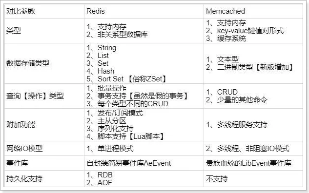
3.2.Redis的单线程问题
面试官：Redis采用单线程，如何保证高并发？
面试话术：
Redis快的主要原因是：
- 完全基于内存
- 数据结构简单，对数据操作也简单
- 使用多路 I/O 复用模型，充分利用CPU资源
面试官：这样做的好处是什么？
面试话术：
单线程优势有下面几点：
- 代码更清晰，处理逻辑更简单
- 不用去考虑各种锁的问题，不存在加锁释放锁操作，没有因为锁而导致的性能消耗
- 不存在多进程或者多线程导致的CPU切换，充分利用CPU资源
3.2.Redis的持久化方案由哪些？
相关资料：
1）RDB 持久化
RDB持久化可以使用save或bgsave，为了不阻塞主进程业务，一般都使用bgsave，流程：
- Redis 进程会 fork 出一个子进程（与父进程内存数据一致）。
- 父进程继续处理客户端请求命令
- 由子进程将内存中的所有数据写入到一个临时的 RDB 文件中。
- 完成写入操作之后，旧的 RDB 文件会被新的 RDB 文件替换掉。
下面是一些和 RDB 持久化相关的配置：
save 60 10000：如果在 60 秒内有 10000 个 key 发生改变，那就执行 RDB 持久化。stop-writes-on-bgsave-error yes：如果 Redis 执行 RDB 持久化失败（常见于操作系统内存不足），那么 Redis 将不再接受 client 写入数据的请求。rdbcompression yes：当生成 RDB 文件时，同时进行压缩。dbfilename dump.rdb：将 RDB 文件命名为 dump.rdb。dir /var/lib/redis：将 RDB 文件保存在/var/lib/redis目录下。
当然在实践中，我们通常会将stop-writes-on-bgsave-error设置为false，同时让监控系统在 Redis 执行 RDB 持久化失败时发送告警，以便人工介入解决，而不是粗暴地拒绝 client 的写入请求。
RDB持久化的优点：
- RDB持久化文件小，Redis数据恢复时速度快
- 子进程不影响父进程，父进程可以持续处理客户端命令
- 子进程fork时采用copy-on-write方式，大多数情况下，没有太多的内存消耗，效率比较好。
RDB 持久化的缺点：
- 子进程fork时采用copy-on-write方式，如果Redis此时写操作较多，可能导致额外的内存占用，甚至内存溢出
- RDB文件压缩会减小文件体积，但通过时会对CPU有额外的消耗
- 如果业务场景很看重数据的持久性 (durability)，那么不应该采用 RDB 持久化。譬如说，如果 Redis 每 5 分钟执行一次 RDB 持久化，要是 Redis 意外奔溃了，那么最多会丢失 5 分钟的数据。
2）AOF 持久化
可以使用appendonly yes配置项来开启 AOF 持久化。Redis 执行 AOF 持久化时，会将接收到的写命令追加到 AOF 文件的末尾，因此 Redis 只要对 AOF 文件中的命令进行回放，就可以将数据库还原到原先的状态。 与 RDB 持久化相比，AOF 持久化的一个明显优势就是，它可以提高数据的持久性 (durability)。因为在 AOF 模式下，Redis 每次接收到 client 的写命令，就会将命令write()到 AOF 文件末尾。 然而，在 Linux 中，将数据write()到文件后，数据并不会立即刷新到磁盘，而会先暂存在 OS 的文件系统缓冲区。在合适的时机，OS 才会将缓冲区的数据刷新到磁盘（如果需要将文件内容刷新到磁盘，可以调用fsync()或fdatasync()）。 通过appendfsync配置项，可以控制 Redis 将命令同步到磁盘的频率：
always：每次 Redis 将命令write()到 AOF 文件时，都会调用fsync()，将命令刷新到磁盘。这可以保证最好的数据持久性，但却会给系统带来极大的开销。no：Redis 只将命令write()到 AOF 文件。这会让 OS 决定何时将命令刷新到磁盘。everysec：除了将命令write()到 AOF 文件，Redis 还会每秒执行一次fsync()。在实践中，推荐使用这种设置，一定程度上可以保证数据持久性，又不会明显降低 Redis 性能。
然而，AOF 持久化并不是没有缺点的：Redis 会不断将接收到的写命令追加到 AOF 文件中，导致 AOF 文件越来越大。过大的 AOF 文件会消耗磁盘空间，并且导致 Redis 重启时更加缓慢。为了解决这个问题，在适当情况下，Redis 会对 AOF 文件进行重写，去除文件中冗余的命令，以减小 AOF 文件的体积。在重写 AOF 文件期间， Redis 会启动一个子进程，由子进程负责对 AOF 文件进行重写。 可以通过下面两个配置项，控制 Redis 重写 AOF 文件的频率：
auto-aof-rewrite-min-size 64mbauto-aof-rewrite-percentage 100
上面两个配置的作用：当 AOF 文件的体积大于 64MB，并且 AOF 文件的体积比上一次重写之后的体积大了至少一倍，那么 Redis 就会执行 AOF 重写。
优点：
- 持久化频率高，数据可靠性高
- 没有额外的内存或CPU消耗
缺点：
- 文件体积大
- 文件大导致服务数据恢复时效率较低
面试话术：
Redis 提供了两种数据持久化的方式，一种是 RDB，另一种是 AOF。默认情况下，Redis 使用的是 RDB 持久化。
RDB持久化文件体积较小，但是保存数据的频率一般较低，可靠性差，容易丢失数据。另外RDB写数据时会采用Fork函数拷贝主进程，可能有额外的内存消耗，文件压缩也会有额外的CPU消耗。
ROF持久化可以做到每秒钟持久化一次，可靠性高。但是持久化文件体积较大，导致数据恢复时读取文件时间较长，效率略低
3.3.Redis的集群方式有哪些？
面试话术：
Redis集群可以分为主从集群和分片集群两类。
主从集群一般一主多从，主库用来写数据，从库用来读数据。结合哨兵，可以再主库宕机时从新选主，目的是保证Redis的高可用。
分片集群是数据分片，我们会让多个Redis节点组成集群，并将16383个插槽分到不同的节点上。存储数据时利用对key做hash运算，得到插槽值后存储到对应的节点即可。因为存储数据面向的是插槽而非节点本身，因此可以做到集群动态伸缩。目的是让Redis能存储更多数据。
1）主从集群
主从集群，也是读写分离集群。一般都是一主多从方式。
Redis 的复制（replication）功能允许用户根据一个 Redis 服务器来创建任意多个该服务器的复制品，其中被复制的服务器为主服务器（master），而通过复制创建出来的服务器复制品则为从服务器（slave）。
只要主从服务器之间的网络连接正常，主从服务器两者会具有相同的数据，主服务器就会一直将发生在自己身上的数据更新同步 给从服务器，从而一直保证主从服务器的数据相同。
- 写数据时只能通过主节点完成
- 读数据可以从任何节点完成
- 如果配置了
哨兵节点，当master宕机时，哨兵会从salve节点选出一个新的主。
主从集群分两种：
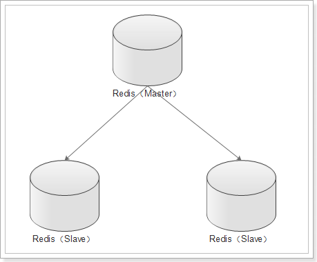
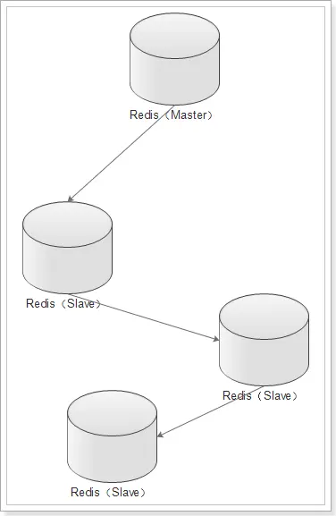
带有哨兵的集群：
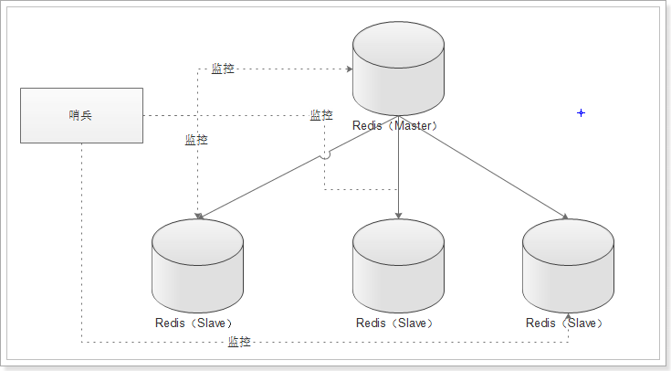
2）分片集群
主从集群中，每个节点都要保存所有信息，容易形成木桶效应。并且当数据量较大时，单个机器无法满足需求。此时我们就要使用分片集群了。
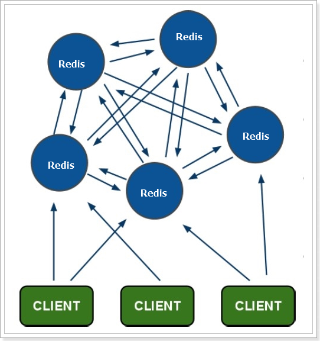
集群特征：
- 每个节点都保存不同数据
- 所有的redis节点彼此互联(PING-PONG机制),内部使用二进制协议优化传输速度和带宽.
- 节点的fail是通过集群中超过半数的节点检测失效时才生效.
- 客户端与redis节点直连,不需要中间proxy层连接集群中任何一个可用节点都可以访问到数据
- redis-cluster把所有的物理节点映射到[0-16383]slot（插槽）上，实现动态伸缩
为了保证Redis中每个节点的高可用，我们还可以给每个节点创建replication（slave节点），如图：
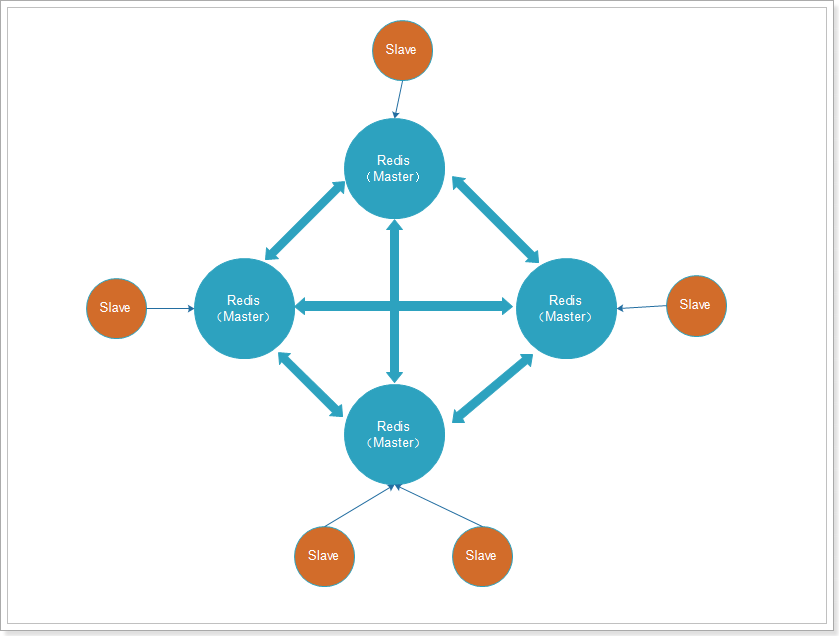
出现故障时，主从可以及时切换：
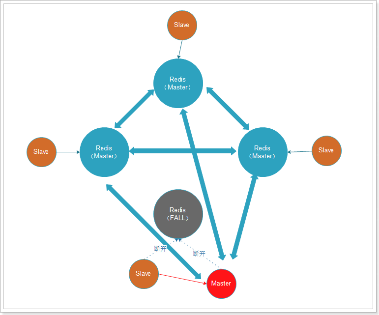
3.4.Redis的常用数据类型有哪些？
支持多种类型的数据结构，主要区别是value存储的数据格式不同：
- string：最基本的数据类型，二进制安全的字符串，最大512M。
- list：按照添加顺序保持顺序的字符串列表。
- set：无序的字符串集合，不存在重复的元素。
- sorted set：已排序的字符串集合。
- hash：key-value对格式
3.5.聊一下Redis事务机制
相关资料：
参考：http://redisdoc.com/topic/transaction.html
Redis事务功能是通过MULTI、EXEC、DISCARD和WATCH 四个原语实现的。Redis会将一个事务中的所有命令序列化，然后按顺序执行。但是Redis事务不支持回滚操作，命令运行出错后，正确的命令会继续执行。
MULTI: 用于开启一个事务，它总是返回OK。 MULTI执行之后，客户端可以继续向服务器发送任意多条命令，这些命令不会立即被执行，而是被放到一个待执行命令队列中EXEC：按顺序执行命令队列内的所有命令。返回所有命令的返回值。事务执行过程中，Redis不会执行其它事务的命令。DISCARD：清空命令队列，并放弃执行事务， 并且客户端会从事务状态中退出WATCH：Redis的乐观锁机制，利用compare-and-set（CAS）原理，可以监控一个或多个键，一旦其中有一个键被修改，之后的事务就不会执行
使用事务时可能会遇上以下两种错误：
- 执行 EXEC 之前，入队的命令可能会出错。比如说，命令可能会产生语法错误（参数数量错误，参数名错误，等等），或者其他更严重的错误，比如内存不足（如果服务器使用
maxmemory设置了最大内存限制的话）。 - Redis 2.6.5 开始，服务器会对命令入队失败的情况进行记录，并在客户端调用 EXEC 命令时，拒绝执行并自动放弃这个事务。
- 命令可能在 EXEC 调用之后失败。举个例子，事务中的命令可能处理了错误类型的键，比如将列表命令用在了字符串键上面，诸如此类。
- 即使事务中有某个/某些命令在执行时产生了错误， 事务中的其他命令仍然会继续执行，不会回滚。
为什么 Redis 不支持回滚（roll back）？
以下是这种做法的优点：
- Redis 命令只会因为错误的语法而失败（并且这些问题不能在入队时发现），或是命令用在了错误类型的键上面：这也就是说，从实用性的角度来说，失败的命令是由编程错误造成的，而这些错误应该在开发的过程中被发现，而不应该出现在生产环境中。
- 因为不需要对回滚进行支持，所以 Redis 的内部可以保持简单且快速。
鉴于没有任何机制能避免程序员自己造成的错误， 并且这类错误通常不会在生产环境中出现， 所以 Redis 选择了更简单、更快速的无回滚方式来处理事务。
面试话术：
Redis事务其实是把一系列Redis命令放入队列，然后批量执行，执行过程中不会有其它事务来打断。不过与关系型数据库的事务不同，Redis事务不支持回滚操作，事务中某个命令执行失败，其它命令依然会执行。
为了弥补不能回滚的问题，Redis会在事务入队时就检查命令，如果命令异常则会放弃整个事务。
因此，只要程序员编程是正确的，理论上说Redis会正确执行所有事务，无需回滚。
面试官：如果事务执行一半的时候Redis宕机怎么办？
Redis有持久化机制，因为可靠性问题，我们一般使用AOF持久化。事务的所有命令也会写入AOF文件，但是如果在执行EXEC命令之前，Redis已经宕机，则AOF文件中事务不完整。使用 redis-check-aof 程序可以移除 AOF 文件中不完整事务的信息，确保服务器可以顺利启动。
3.6.Redis的Key过期策略
参考资料：
为什么需要内存回收？
- 1、在Redis中，set指令可以指定key的过期时间，当过期时间到达以后，key就失效了；
- 2、Redis是基于内存操作的，所有的数据都是保存在内存中，一台机器的内存是有限且很宝贵的。
基于以上两点，为了保证Redis能继续提供可靠的服务，Redis需要一种机制清理掉不常用的、无效的、多余的数据，失效后的数据需要及时清理，这就需要内存回收了。
Redis的内存回收主要分为过期删除策略和内存淘汰策略两部分。
过期删除策略
删除达到过期时间的key。
- 1）定时删除
对于每一个设置了过期时间的key都会创建一个定时器，一旦到达过期时间就立即删除。该策略可以立即清除过期的数据，对内存较友好，但是缺点是占用了大量的CPU资源去处理过期的数据，会影响Redis的吞吐量和响应时间。
- 2）惰性删除
当访问一个key时，才判断该key是否过期，过期则删除。该策略能最大限度地节省CPU资源，但是对内存却十分不友好。有一种极端的情况是可能出现大量的过期key没有被再次访问，因此不会被清除，导致占用了大量的内存。
在计算机科学中，懒惰删除（英文：lazy deletion）指的是从一个散列表（也称哈希表）中删除元素的一种方法。在这个方法中，删除仅仅是指标记一个元素被删除，而不是整个清除它。被删除的位点在插入时被当作空元素，在搜索之时被当作已占据。
- 3）定期删除
每隔一段时间，扫描Redis中过期key字典，并清除部分过期的key。该策略是前两者的一个折中方案，还可以通过调整定时扫描的时间间隔和每次扫描的限定耗时，在不同情况下使得CPU和内存资源达到最优的平衡效果。
在Redis中，同时使用了定期删除和惰性删除。不过Redis定期删除采用的是随机抽取的方式删除部分Key，因此不能保证过期key 100%的删除。
Redis结合了定期删除和惰性删除，基本上能很好的处理过期数据的清理，但是实际上还是有点问题的，如果过期key较多，定期删除漏掉了一部分，而且也没有及时去查，即没有走惰性删除，那么就会有大量的过期key堆积在内存中，导致redis内存耗尽，当内存耗尽之后，有新的key到来会发生什么事呢？是直接抛弃还是其他措施呢？有什么办法可以接受更多的key？
内存淘汰策略
Redis的内存淘汰策略，是指内存达到maxmemory极限时，使用某种算法来决定清理掉哪些数据，以保证新数据的存入。
Redis的内存淘汰机制包括：
- noeviction: 当内存不足以容纳新写入数据时，新写入操作会报错。
- allkeys-lru：当内存不足以容纳新写入数据时，在键空间（
server.db[i].dict）中，移除最近最少使用的 key（这个是最常用的）。 - allkeys-random：当内存不足以容纳新写入数据时，在键空间（
server.db[i].dict）中，随机移除某个 key。 - volatile-lru：当内存不足以容纳新写入数据时，在设置了过期时间的键空间（
server.db[i].expires）中，移除最近最少使用的 key。 - volatile-random：当内存不足以容纳新写入数据时，在设置了过期时间的键空间（
server.db[i].expires）中，随机移除某个 key。 - volatile-ttl：当内存不足以容纳新写入数据时，在设置了过期时间的键空间（
server.db[i].expires）中，有更早过期时间的 key 优先移除。
在配置文件中，通过maxmemory-policy可以配置要使用哪一个淘汰机制。
什么时候会进行淘汰？
Redis会在每一次处理命令的时候（processCommand函数调用freeMemoryIfNeeded）判断当前redis是否达到了内存的最大限制，如果达到限制，则使用对应的算法去处理需要删除的key。
在淘汰key时，Redis默认最常用的是LRU算法（Latest Recently Used）。Redis通过在每一个redisObject保存lru属性来保存key最近的访问时间，在实现LRU算法时直接读取key的lru属性。
具体实现时，Redis遍历每一个db，从每一个db中随机抽取一批样本key，默认是3个key，再从这3个key中，删除最近最少使用的key。
面试话术：
Redis过期策略包含定期删除和惰性删除两部分。定期删除是在Redis内部有一个定时任务，会定期删除一些过期的key。惰性删除是当用户查询某个Key时，会检查这个Key是否已经过期，如果没过期则返回用户，如果过期则删除。
但是这两个策略都无法保证过期key一定删除，漏网之鱼越来越多，还可能导致内存溢出。当发生内存不足问题时，Redis还会做内存回收。内存回收采用LRU策略，就是最近最少使用。其原理就是记录每个Key的最近使用时间，内存回收时，随机抽取一些Key，比较其使用时间，把最老的几个删除。
Redis的逻辑是：最近使用过的，很可能再次被使用
3.7.Redis在项目中的哪些地方有用到?
（1）共享session
在分布式系统下，服务会部署在不同的tomcat，因此多个tomcat的session无法共享，以前存储在session中的数据无法实现共享，可以用redis代替session，解决分布式系统间数据共享问题。
（2）数据缓存
Redis采用内存存储，读写效率较高。我们可以把数据库的访问频率高的热点数据存储到redis中，这样用户请求时优先从redis中读取，减少数据库压力，提高并发能力。
（3）异步队列
Reids在内存存储引擎领域的一大优点是提供 list 和 set 操作，这使得Redis能作为一个很好的消息队列平台来使用。而且Redis中还有pub/sub这样的专用结构，用于1对N的消息通信模式。
（4）分布式锁
Redis中的乐观锁机制，可以帮助我们实现分布式锁的效果，用于解决分布式系统下的多线程安全问题
3.8.Redis的缓存击穿、缓存雪崩、缓存穿透
1）缓存穿透
参考资料：
什么是缓存穿透
正常情况下，我们去查询数据都是存在。那么请求去查询一条压根儿数据库中根本就不存在的数据，也就是缓存和数据库都查询不到这条数据，但是请求每次都会打到数据库上面去。这种查询不存在数据的现象我们称为缓存穿透。
穿透带来的问题
试想一下，如果有黑客会对你的系统进行攻击，拿一个不存在的id 去查询数据，会产生大量的请求到数据库去查询。可能会导致你的数据库由于压力过大而宕掉。
解决办法
缓存空值：之所以会发生穿透，就是因为缓存中没有存储这些空数据的key。从而导致每次查询都到数据库去了。那么我们就可以为这些key对应的值设置为null 丢到缓存里面去。后面再出现查询这个key 的请求的时候，直接返回null 。这样，就不用在到数据库中去走一圈了，但是别忘了设置过期时间。
BloomFilter（布隆过滤）：将所有可能存在的数据哈希到一个足够大的bitmap中，一个一定不存在的数据会被 这个bitmap拦截掉，从而避免了对底层存储系统的查询压力。在缓存之前在加一层 BloomFilter ，在查询的时候先去 BloomFilter 去查询 key 是否存在，如果不存在就直接返回，存在再走查缓存 -> 查 DB。
话术：
缓存穿透有两种解决方案：其一是把不存在的key设置null值到缓存中。其二是使用布隆过滤器，在查询缓存前先通过布隆过滤器判断key是否存在，存在再去查询缓存。
设置null值可能被恶意针对，攻击者使用大量不存在的不重复key ，那么方案一就会缓存大量不存在key数据。此时我们还可以对Key规定格式模板，然后对不存在的key做正则规范匹配，如果完全不符合就不用存null值到redis，而是直接返回错误。
2）缓存击穿
相关资料：
- 什么是缓存击穿？
key可能会在某些时间点被超高并发地访问，是一种非常“热点”的数据。这个时候，需要考虑一个问题：缓存被“击穿”的问题。
当这个key在失效的瞬间，redis查询失败，持续的大并发就穿破缓存，直接请求数据库，就像在一个屏障上凿开了一个洞。
- 解决方案：
- 使用互斥锁(mutex key)：mutex，就是互斥。简单地来说，就是在缓存失效的时候（判断拿出来的值为空），不是立即去load db，而是先使用Redis的SETNX去set一个互斥key，当操作返回成功时，再进行load db的操作并回设缓存；否则，就重试整个get缓存的方法。SETNX，是「SET if Not eXists」的缩写，也就是只有不存在的时候才设置，可以利用它来实现互斥的效果。
- 软过期：也就是逻辑过期，不使用redis提供的过期时间，而是业务层在数据中存储过期时间信息。查询时由业务程序判断是否过期，如果数据即将过期时，将缓存的时效延长，程序可以派遣一个线程去数据库中获取最新的数据，其他线程这时看到延长了的过期时间，就会继续使用旧数据，等派遣的线程获取最新数据后再更新缓存。
推荐使用互斥锁，因为软过期会有业务逻辑侵入和额外的判断。
面试话术：
缓存击穿主要担心的是某个Key过期，更新缓存时引起对数据库的突发高并发访问。因此我们可以在更新缓存时采用互斥锁控制，只允许一个线程去更新缓存，其它线程等待并重新读取缓存。例如Redis的setnx命令就能实现互斥效果。
3）缓存雪崩
相关资料：
缓存雪崩，是指在某一个时间段，缓存集中过期失效。对这批数据的访问查询，都落到了数据库上，对于数据库而言，就会产生周期性的压力波峰。
解决方案：
- 数据分类分批处理：采取不同分类数据，缓存不同周期
- 相同分类数据：采用固定时长加随机数方式设置缓存
- 热点数据缓存时间长一些，冷门数据缓存时间短一些
- 避免redis节点宕机引起雪崩，搭建主从集群，保证高可用
面试话术：
解决缓存雪崩问题的关键是让缓存Key的过期时间分散。因此我们可以把数据按照业务分类，然后设置不同过期时间。相同业务类型的key，设置固定时长加随机数。尽可能保证每个Key的过期时间都不相同。
另外，Redis宕机也可能导致缓存雪崩，因此我们还要搭建Redis主从集群及哨兵监控，保证Redis的高可用。
3.9.缓存冷热数据分离
背景资料：
Redis使用的是内存存储，当需要海量数据存储时，成本非常高。
经过调研发现，当前主流DDR3内存和主流SATA SSD的单位成本价格差距大概在20倍左右，为了优化redis机器综合成本，我们考虑实现基于热度统计 的数据分级存储及数据在RAM/FLASH之间的动态交换，从而大幅度降低成本，达到性能与成本的高平衡。
基本思路：基于key访问次数(LFU)的热度统计算法识别出热点数据，并将热点数据保留在redis中，对于无访问/访问次数少的数据则转存到SSD上，如果SSD上的key再次变热，则重新将其加载到redis内存中。
目前流行的高性能磁盘存储，并且遵循Redis协议的方案包括：
- SSDB：http://ssdb.io/zh_cn/
- RocksDB：https://rocksdb.org.cn/
因此，我们就需要在应用程序与缓存服务之间引入代理，实现Redis和SSD之间的切换，如图：
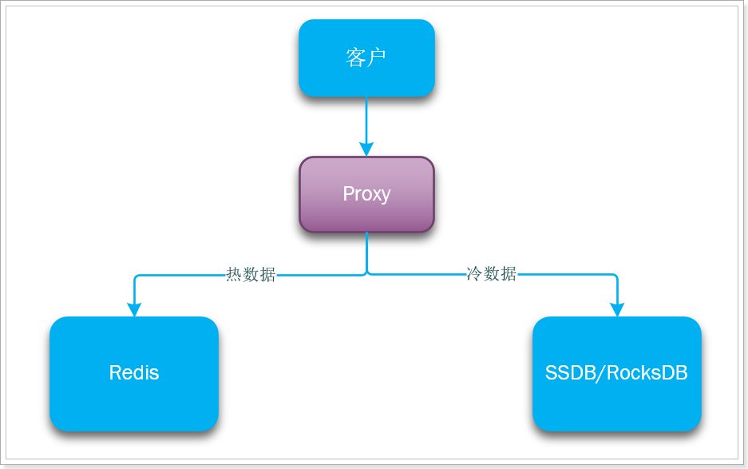
这样的代理方案阿里云提供的就有。当然也有一些开源方案，例如：https://github.com/JingchengLi/swapdb
3.10.Redis实现分布式锁
分布式锁要满足的条件：
1）最基本的分布式锁：
利用Redis的setnx命令，这个命令的特征时如果多次执行，只有第一次执行会成功，可以实现互斥的效果。但是为了保证服务宕机时也可以释放锁，需要利用expire命令给锁设置一个有效期
1 | setnx lock thread-01 # 尝试获取锁 |
面试官问题1：如果expire之前服务宕机怎么办？
要保证setnx和expire命令的原子性。redis的set命令可以满足：
1 | set key value [NX] [EX time] |
需要添加nx和ex的选项：
- NX：与setnx一致，第一次执行成功
- EX：设置过期时间
面试官问题2：释放锁的时候，如果自己的锁已经过期了，此时会出现安全漏洞，如何解决？
在锁中存储当前进程和线程标识，释放锁时对锁的标识判断，如果是自己的则删除，不是则放弃操作。
但是这两步操作要保证原子性，需要通过Lua脚本来实现。
1 | if redis.call("get",KEYS[1]) == ARGV[1] then |
2）可重入分布式锁
如果有重入的需求，则除了在锁中记录进程标识，还要记录重试次数，流程如下：
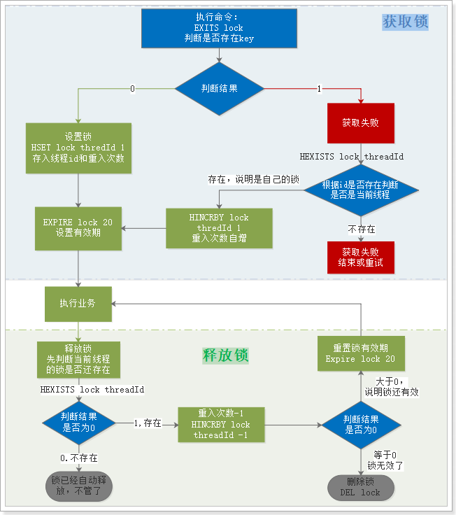
下面我们假设锁的key为“lock”，hashKey是当前线程的id：“threadId”，锁自动释放时间假设为20
获取锁的步骤：
- 1、判断lock是否存在
EXISTS lock - 存在，说明有人获取锁了，下面判断是不是自己的锁
- 判断当前线程id作为hashKey是否存在：
HEXISTS lock threadId - 不存在，说明锁已经有了，且不是自己获取的，锁获取失败，end
- 存在，说明是自己获取的锁，重入次数+1：
HINCRBY lock threadId 1，去到步骤3
- 判断当前线程id作为hashKey是否存在：
- 2、不存在，说明可以获取锁，
HSET key threadId 1 - 3、设置锁自动释放时间，
EXPIRE lock 20
释放锁的步骤：
- 1、判断当前线程id作为hashKey是否存在：
HEXISTS lock threadId - 不存在，说明锁已经失效，不用管了
- 存在，说明锁还在，重入次数减1：
HINCRBY lock threadId -1，获取新的重入次数 - 2、判断重入次数是否为0：
- 为0，说明锁全部释放，删除key：
DEL lock - 大于0，说明锁还在使用，重置有效时间：
EXPIRE lock 20
对应的Lua脚本如下：
首先是获取锁：
1 | local key = KEYS[1]; -- 锁的key |
然后是释放锁：
1 | local key = KEYS[1]; -- 锁的key |
3）高可用的锁
面试官问题：redis分布式锁依赖与redis，如果redis宕机则锁失效。如何解决？
此时大多数同学会回答说：搭建主从集群，做数据备份。
这样就进入了陷阱，因为面试官的下一个问题就来了：
面试官问题：如果搭建主从集群做数据备份时，进程A获取锁，master还没有把数据备份到slave，master宕机，slave升级为master，此时原来锁失效，其它进程也可以获取锁，出现安全问题。如何解决？
关于这个问题，Redis官网给出了解决方案，使用RedLock思路可以解决：
在Redis的分布式环境中，我们假设有N个Redis master。这些节点完全互相独立，不存在主从复制或者其他集群协调机制。之前我们已经描述了在Redis单实例下怎么安全地获取和释放锁。我们确保将在每（N)个实例上使用此方法获取和释放锁。在这个样例中，我们假设有5个Redis master节点，这是一个比较合理的设置，所以我们需要在5台机器上面或者5台虚拟机上面运行这些实例，这样保证他们不会同时都宕掉。
为了取到锁，客户端应该执行以下操作:
- 获取当前Unix时间，以毫秒为单位。
- 依次尝试从N个实例，使用相同的key和随机值获取锁。在步骤2，当向Redis设置锁时,客户端应该设置一个网络连接和响应超时时间，这个超时时间应该小于锁的失效时间。例如你的锁自动失效时间为10秒，则超时时间应该在5-50毫秒之间。这样可以避免服务器端Redis已经挂掉的情况下，客户端还在死死地等待响应结果。如果服务器端没有在规定时间内响应，客户端应该尽快尝试另外一个Redis实例。
- 客户端使用当前时间减去开始获取锁时间（步骤1记录的时间）就得到获取锁使用的时间。当且仅当从大多数（这里是3个节点）的Redis节点都取到锁，并且使用的时间小于锁失效时间时，锁才算获取成功。
- 如果取到了锁，key的真正有效时间等于有效时间减去获取锁所使用的时间（步骤3计算的结果）。
- 如果因为某些原因，获取锁失败（没有在至少N/2+1个Redis实例取到锁或者取锁时间已经超过了有效时间），客户端应该在所有的Redis实例上进行解锁（即便某些Redis实例根本就没有加锁成功）。
3.11.如何实现数据库与缓存数据一致？
面试话术：
实现方案有下面几种：
- 本地缓存同步：当前微服务的数据库数据与缓存数据同步，可以直接在数据库修改时加入对Redis的修改逻辑，保证一致。
- 跨服务缓存同步：服务A调用了服务B，并对查询结果缓存。服务B数据库修改，可以通过MQ通知服务A，服务A修改Redis缓存数据
- 通用方案：使用Canal框架，伪装成MySQL的salve节点，监听MySQL的binLog变化，然后修改Redis缓存数据